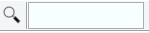

edp
NAME
edp - Edit processing parameters (1D, 2D, 3D)
DESCRIPTION
The command edp opens a dialog box in which you can set all processing parameters.
Entering edp on the command line is equivalent with a click on the ProcPars tab bar of the dataset window.
The following buttons are available:
 Undo the last modification. Can be used repeatedly.
Undo the last modification. Can be used repeatedly.
Switch to Maxent parameters
Switch to processing status parameters
Change raw data set dimensionality (parameter PPARMOD)
 Search for the parameter specified in the search field
Inside the parameter editor, you can do the following actions:
- Click a processing step, e.g. Window at the left of the dialog box. The step becomes highlighted and the corresponding parameters will appear in the right part of the dialog box.
- Click in a parameter field, e.g. SI to set the parameter value. It is automatically stored.
- Hit the Tab key to jump to the next parameter field.
- Hit Shift-Tab to jump to the previous parameter field.
- Use the scroll bar at the right of the dialog box to move to parameters further up or down in the dialog box.
Note that you can also set parameters by entering their names on the command line. A dialog window will appear where you can enter the parameter value(s). For example:
si
On a 1D data set.
Or on a 2D data set:
Alternatively, you can specify the parameter value as an argument on the command line, for example:
si 4k
The size will be set to 4k (=4096).
INPUT AND OUTPUT PARAMETERS
All processing parameters.
INPUT FILES
<tshome>/classes/prop/
pared.prop - parameter properties file
<tshome>/exp/stan/nmr/form/
proc.e - format file for edp
INPUT AND OUTPUT FILES
<dir>/data/<user>/nmr/<name>/<expno>/pdata/<procno>
proc - processing parameters
proc2 - processing parameters for the second direction (2D or 3D)
proc3 - processing parameters for the third direction (3D)